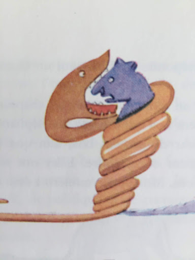

SIX ANS
...

Lorsque j'avais six ans j'ai vu, une fois, une magnifique image, dans un livre sur la Forêt Vierge qui s'appelait "Histoires Vécues". Ça représentait un serpent boa qui avalait un fauve. voici la copie du dessin. on disait dans le livre : "Les serpents boas avalent leur proie tout entière, sans la mâcher. Ensuite, ils ne peuvent plus bouger et ils dorment pendant les six mois de leur digestion."
J'ai alors beaucoup réfléchi sur les aventures de la jungle et, à mon tour, j'ai réussi avec un crayon de couleur, à tracer mon premier dessin.